Με τι μοιάζει τελικά ένα άτομο;
Η εικόνα που έχεις στο μυαλό σου είναι μάλλον λανθασμένη.
Διδακτικοί στόχοι
Συνέχισε το διάβασμα για να μάθεις:
- Την ιστορία της ατομικής θεωρίας.
- Γιατί το πλανητικό μοντέλο αποτυγχάνει ως περιγραφή ενός σταθερού ατόμου.
- Πώς προκύπτει το σχήμα ενός ατόμου από την έννοια του στάσιμου κύματος.
Από τι αποτελείται ο κόσμος;
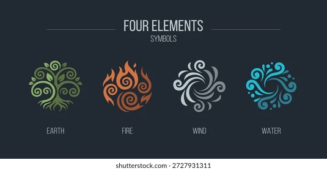
Το ερώτημα αυτό απασχολεί τον άνθρωπο ήδη από τους αρχαίους χρόνους, ενώ μέχρι και σήμερα παραμένει ως επί το πλείστον αναπάντητο. Κάθε λαός είχε τον δικό του κοσμογονικό μύθο σχετικά με την προέλευση του κόσμου και της ύλης. Αυτό όμως που πίστευαν ανεξαιρέτως όλοι οι αρχαίοι πολιτισμοί, στην Ινδία, το Θιβέτ, την Αφρική και την Ελλάδα, ήταν πως η ανεξάντλητη ποικιλία των μορφών και των υλικών που βλέπουν τριγύρω τους είναι απατηλή.
Το σίδερο, το ξύλο, η πέτρα και τα σύννεφα, ίσως δεν είναι τελικά τόσο διαφορετικά όσο φαίνονται, αφού όλα αποτελούνται τελικά από τα ίδια θεμελιώδη στοιχεία (μια λέξη που χρησιμοποιούμε ακόμα και σήμερα για τον ίδιο σκοπό). Γη, νερό, αέρας και φωτιά ήταν από τους δημοφιλέστερους υποψήφιους και ίσως να σκεφτεί κανείς ότι ήταν μια κάπως «πρωτόγονη» μαντεψιά. Κάθε άλλο όμως, διότι αυτά τα στοιχεία αποτελούσαν στην ουσία τις αρχετυπικές μορφές των τριών καταστάσεων της ύλης (στερεό, υγρό, αέριο), καθώς και μια δύναμη που να μπορεί να μεταλλάσσει την μία στην άλλη. Ήταν μια πολύ εύλογη επέκταση της ανθρώπινης εμπειρίας.
Μια διαφορετική υπόθεση
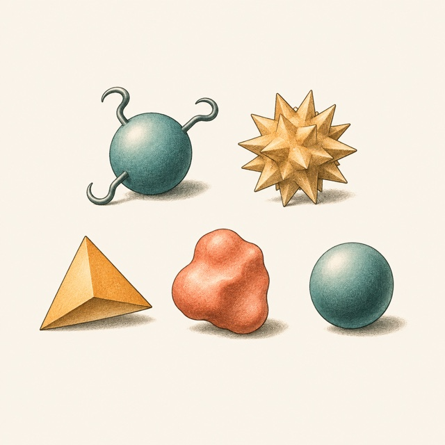
-
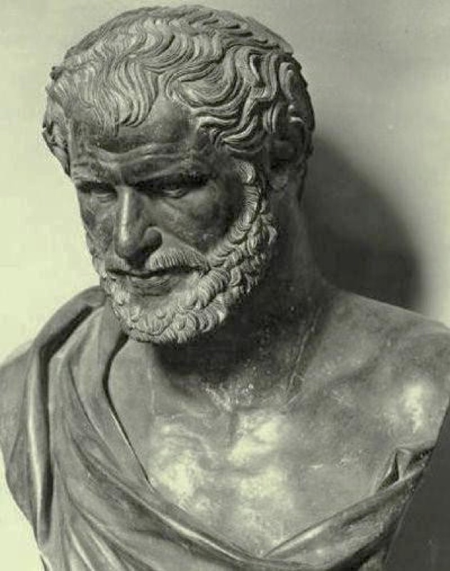
Δημόκριτος (περ. 460–370 π.Χ.)
Όμως, στην αρχαία Ελλάδα, είχε διατυπωθεί από τον Δημόκριτο και μια ακόμη υπόθεση, μεταξύ άλλων. Αυτή η υπόθεση όχι απλώς δεν προέκυπτε από την εμπειρία των αισθήσεων, αλλά ήταν και τελείως αντίθετη με αυτήν! Έλεγε πως η ύλη, παρόλο που στις αισθήσεις μας φαντάζει συνεχής και συμπαγής, στην πραγματικότητα έχει κοκκώδη υφή. Αποτελείται δηλαδή από πολυάριθμες αδιαίρετες οντότητες - τα άτομα (οι περισσότεροι ξένοι ίσως αγνοούν την ετυμολογία της λέξης αλλά για εμάς νομίζω περιττεύει). Αυτά ήταν τα «τούβλα» από τα οποία πίστευε ο Δημόκριτος ότι ήταν χτισμένος ο κόσμος.
Δεν ήξερε όμως πόσα είδη ατόμων υπάρχουν, ποια ήταν η φύση και οι ιδιότητες του καθενός, ούτε το σχήμα και το μέγεθός τους. Φαντάστηκε λοιπόν ότι τα άτομα κάθε υλικού θα έπρεπε να έχουν και τα αντίστοιχα χαρακτηριστικά. Τα άτομα του σιδήρου να είναι βαριά και σκληρά, εφοδιασμένα με άγκιστρα ώστε να συγκρατούνται πολύ γερά μεταξύ τους, τα άτομα του νερού να είναι σφαιρικά και λεία ώστε να γλιστρά εύκολα το ένα πάνω στο άλλο, ενώ του αλατιού κοφτερά και μυτερά, εξ ου και η ιδιαίτερη τους γεύση.
Πριν αρχίσουμε να γελάμε με το πόσο παράλογη μας φαίνεται σήμερα αυτή η εικόνα, πρέπει να αναγνωρίσουμε ότι η υπόθεση του Δημόκριτου κρύβει από πίσω την εξής ιδέα: την πίστη στην απλότητα του κόσμου. Την πεποίθηση ότι πίσω από την ανεξιχνίαστη πολυπλοκότητα του σύμπαντος υπάρχει μια απλούστερη καλά κρυμμένη δομή, η οποία πρέπει να αναζητηθεί σε πιο μικροσκοπικό επίπεδο από αυτό που αντιλαμβάνονται οι αισθήσεις μας. Δεν είχε δηλαδή απλώς τεθεί μία από τις πιο θεμελιώδεις ερωτήσεις στο δρόμο για την κατανόηση της Φύσης αλλά είχε δοθεί ταυτόχρονα και μια εξίσου εντυπωσιακή απάντηση.
O Richard Feynman, ένας από τους σπουδαιότερους φυσικούς του 20ου αιώνα, αναφέρει χαρακτηριστικά ότι αν ποτέ συνέβαινε κάποιο κατακλυσμιαίο γεγονός, τέτοιο ώστε να χανόταν ολόκληρη η ανθρώπινη γνώση πέραν μια πρότασης, τότε η πρόταση που θα έπρεπε πάση θυσία να διασωθεί είναι η ατομική υπόθεση, ότι δηλαδή:
όλα τα πράγματα αποτελούνται από άτομα, μικρά σωματίδια σε αέναη κίνηση.
Για το μεγαλύτερο κομμάτι της ιστορίας, το ερώτημα «από τι αποτελείται ο κόσμος» άνηκε στην σφαίρα της φιλοσοφίας και της θεολογίας, γι’ αυτό και δεν αμφισβητήθηκαν οι ήδη υπάρχουσες απαντήσεις. Όσο για την ατομική υπόθεση, ήταν μια ιδέα που είχε γεννηθεί 2000 χρόνια πριν την ώρα της. Μόνο μετά την ανάπτυξη της επιστήμης μπόρεσε να γίνει μια συστηματική μελέτη των συστατικών που απαρτίζουν τον κόσμο μας.
Η ατομική θεωρία ξανά στο προσκήνιο
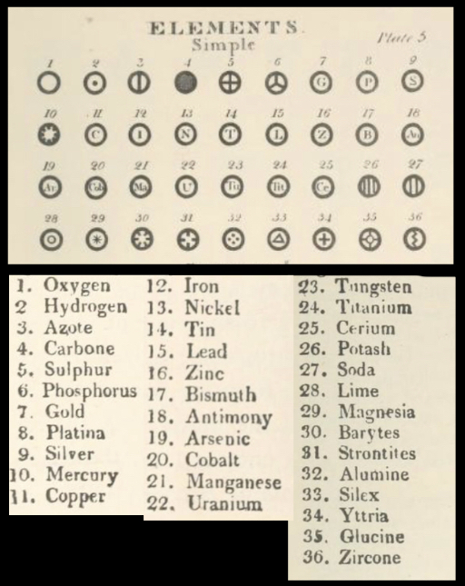
-
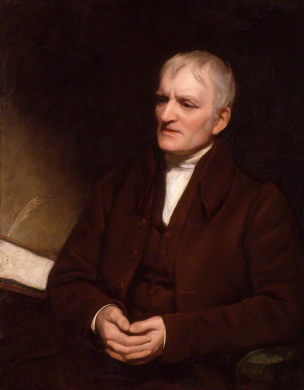
John Dalton (1766–1844)
Στο τέλος του 18ου αιώνα, είχαν ανακαλυφθεί από Γάλλους επιστήμονες δύο αρχές σχετικά με τις χημικές αντιδράσεις. Η πρώτη ήταν η Αρχή της διατήρησης της μάζας που διατυπώθηκε από τον Antoine Lavoisier και έλεγε ότι η μάζα των στοιχείων που εμπλέκονται σε μια αντίδραση παραμένει σταθερή.
Η δεύτερη, που αποδείχθηκε για πρώτη φορά από τον Joseph Louis Proust, ήταν η Αρχή των σταθερών αναλογιών και έλεγε με λίγα λόγια ότι δύο ουσίες θα πρέπει να αντιδράσουν σε συγκεκριμένες αναλογίες για να δώσουν μια τρίτη, ενώ ό,τι περισσεύει μένει απ’ έξω. Παραδείγματος χάρη, το υδρογόνο και το οξυγόνο πρέπει να αντιδράσουν σε μια αναλογία 2:1 για να δώσουν νερό. Αλλά και το αντίστροφο, η διάσπαση του νερού θα δώσει υδρογόνο και οξυγόνο σε αναλογίες πάλι 2:1.
Οι νόμοι αυτοί εξηγούνταν με τη μία αν κάποιος υπέθετε ότι η ύλη αποτελείται από αδιαίρετες οντότητες, διαφορετικές για κάθε υλικό. Και πράγματι, ο Άγγλος επιστήμονας John Dalton δεν άργησε να κάνει μια τέτοια υπόθεση (ίσως έχεις ακούσει το όνομά του από την πάθηση της αχρωματοψίας που λέγεται αλλιώς και Δαλτονισμός, μια πάθηση από την οποία όχι απλά έπασχε ο ίδιος αλλά έγινε ο πρώτος που τη μελέτησε επιστημονικά). Σε αυτόν αποδίδεται και η πρώτη επιστημονική διατύπωση της ατομικής θεωρίας.
Πρότεινε λοιπόν ότι κάθε χημικό στοιχείο αποτελείται από πανομοιότυπα άτομα τα οποία δεν μπορούν να αλλοιωθούν και να καταστραφούν αλλά μπορούν να συνδυαστούν και να κολλήσουν μεταξύ τους σχηματίζοντας πιο πολύπλοκες δομές (τα γνωστά σε εμάς μόρια). Την υπόθεση αυτή προσπάθησε να επιβεβαιώσει με αρκετά πειράματα στα οποία προσδιόρισε μάλιστα και το ατομικό βάρος αρκετών στοιχείων. Στις αρχές του 1800 λοιπόν, τα άτομα εικονίζονταν ως μικρές συμπαγείς σφαίρες όπου το κάθε είδος είχε διαφορετικό βάρος, μέγεθος (ή και χρώμα, ο ίδιος πάντως σίγουρα δεν θα μπορούσε να ξέρει!). Τα χημικά στοιχεία δηλαδή είναι απλώς διαφορετικά είδη ατόμων.
Πόσα είναι πια τα διαφορετικά είδη ατόμων/στοιχείων;
-
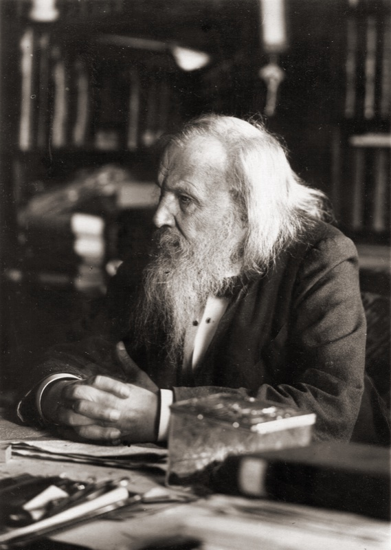
Dmitri Mendeleev (1834–1907)
Με το πέρασμα των χρόνων η λίστα των διαφορετικών ατόμων όλο και αυξανόταν καθώς οι επιστήμονες ανακάλυπταν διαρκώς στοιχεία με νέες ιδιότητες (με μέσο όρο ένα καινούργιο κάθε χρόνο). To 1863, είχαμε φτάσει τα 56 και υπήρχε έντονη ανάγκη να μπει μια τάξη σε αυτό το χάος αφού ο αριθμός δεν έμοιαζε να είναι οριστικός.
Ήταν γνωστό πάντως ότι ορισμένα στοιχεία, κατά τα άλλα εντελώς διαφορετικά, εμφάνιζαν κοινές χημικές ιδιότητες. Εκμεταλλευόμενος αυτή τη συμμετρία, ο Ρώσος χημικός Dmitri Mendeleev παρατήρησε ότι αν τοποθετούσε τα γνωστά στοιχεία κατά σειρά βάρους, εμφάνιζαν μια περιοδικότητα στις χημικές τους ιδιότητες. Κατασκεύασε έτσι τον πρώτο αναγνωρίσιμο περιοδικό πίνακα των μέχρι τότε γνωστών χημικών στοιχείων προβλέποντας μέχρι και ορισμένες ιδιότητες μη ταυτοποιημένων ακόμα στοιχείων που επρόκειτο να γεμίσουν τα κενά. Αναφέρεται μάλιστα να είπε για αυτή την ιδέα του:
Είδα στον ύπνο μου έναν πίνακα με το κάθε στοιχείο να παίρνει τη σωστή θέση. Μόλις ξύπνησα, το έγραψα κατευθείαν σε ένα φύλλο χαρτί - μόνο μία διόρθωση χρειάστηκε να κάνω αργότερα.
Ο κόσμος, λοιπόν, όπως όλα έδειχναν γύρω στα 1870, είχε τη δομή που οι αρχαίοι άνθρωποι είχαν μαντέψει. Η μόνη διαφορά ήταν ότι δεν αποτελούνταν από 4 αρχέγονα στοιχεία αλλά από 60 περίπου χημικά στοιχεία. Σήμερα ο αριθμός έχει φτάσει στα 118 - και ακόμα δεν είναι οριστικός.
Το άτομο αποκτά δομή
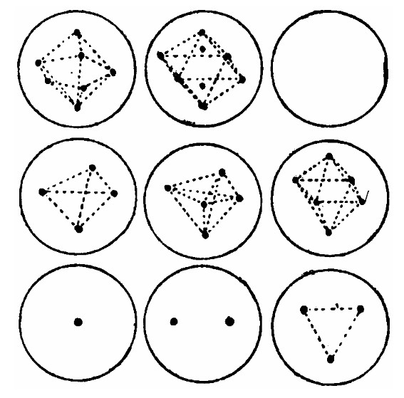
-
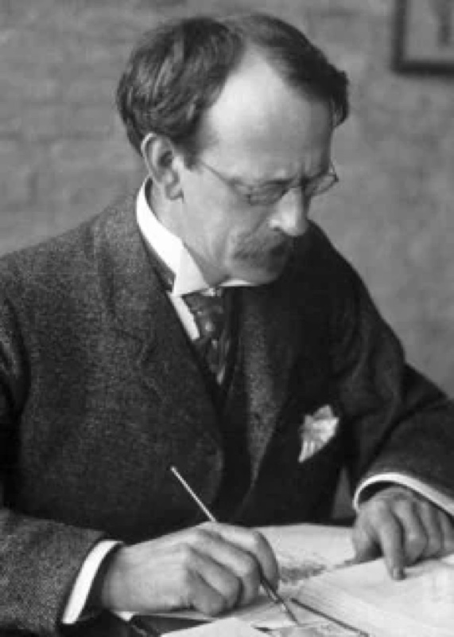
J. J. Thomson (1856–1940)
Η συμμετρία του περιοδικού πίνακα και τα επαναλαμβανόμενα μοτίβα που εμπεριείχε ήταν υποδείξεις πως τα διαφορετικά στοιχεία ίσως να μην είναι τόσο ξεχωριστά τελικά. Τι κοινό όμως μπορεί να έχει το οξυγόνο με τον χαλκό και ο υδράργυρος με τον άνθρακα; Ίσως υπάρχει κάποια βαθύτερη δομή που μέχρι τώρα δεν έχει αποκαλυφθεί. Ίσως τα άτομα να μην είναι και τόσο αδιαίρετα τελικά και να αποτελούνται και τα ίδια από ακόμα μικρότερα κομμάτια που θα πρέπει να αναζητηθούν σε ακόμα πιο μικροσκοπικό επίπεδο. Κάτι τέτοιο θα μπορούσε να εξηγήσει τις κοινές ιδιότητες που έχουν, άσχετα κατά τα άλλα, χημικά στοιχεία.
Η υποψία αυτή δεν άργησε να επιβεβαιωθεί. To 1897 στο εργαστήριο Cavendish στο Cambridge ο φυσικός Sir Joseph John Thomson πειραματιζόμενος με καθοδικές ακτίνες συμπέρανε ότι τα ίδια τα άτομα αποτελούνται από μικρότερα κομμάτια. Ήταν η πρώτη φορά που κάποιος είχε δεδομένα που κατέρριπταν την ατομική υπόθεση.
Αρχικά τα ονόμασε σωμάτια (corpuscles), αλλά πλέον είναι γνωστά σε όλους μας ως ηλεκτρόνια, υπάρχουν μέσα σε κάθε άτομο, έχουν αρνητικό ηλεκτρικό φορτίο και είναι πάρα πολλές φορές πιο μικροσκοπικά από αυτό. Με αυτή την ανακάλυψη, η περιοδικότητα των χημικών στοιχείων εξηγήθηκε αβίαστα, αφού έγινε προφανές ότι αυτό που καθόριζε τις κοινές χημικές τους ιδιότητες ήταν απλώς ο αριθμός των ηλεκτρονίων που περιείχαν. Το ηλεκτρόνιο είναι ό,τι κοντινότερο στο άτομο που είχε φανταστεί ο Δημόκριτος, μια πραγματικά θεμελιώδης και αδιαίρετη οντότητα (τουλάχιστον έτσι πιστεύουμε σήμερα).
Ο Thomson πρότεινε, λοιπόν, για να περιγράψει τη δομή ενός ατόμου, ένα μοντέλο σύμφωνα με το οποίο τα αρνητικά φορτισμένα ηλεκτρόνια ήταν κατανεμημένα πάνω σε μια συμπαγή σφαίρα θετικού φορτίου. Αυτό ήταν αναγκαίο διότι ήταν γνωστό πως όλα τα γνωστά μέχρι σήμερα άτομα είναι ουδέτερα, δεν έχουν συνολικό ηλεκτρικό φορτίο. Σε άρθρα εκλαΐκευσης της επιστήμης της εποχής, το άτομο παρουσιάστηκε ως ένα σταφιδόψωμο με τα ηλεκτρόνια να παίρνουν τον ρόλο της σταφίδας. Ο Thomson δεν συμφώνησε ποτέ σε αυτή την αναλογία αλλά το μοντέλο του έχει μείνει πλέον γνωστό ως το μοντέλο του σταφιδόψωμου. Ευτυχώς-δυστυχώς το μοντέλο δεν έζησε για πολύ καιρό.
Ένα μοντέλο γνώριμο σε όλους
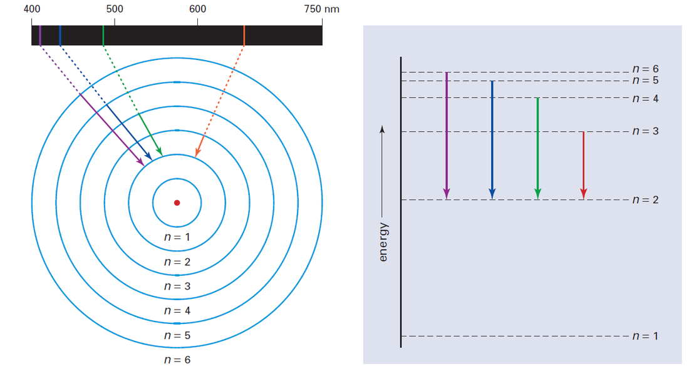
-
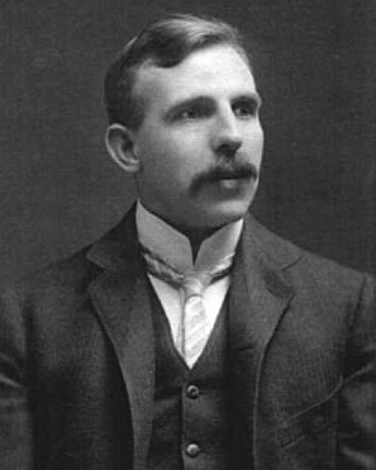
Ernest Rutherford (1871–1937) - Niels Bohr (1885–1962)
Μόνο 7 χρόνια αργότερα ήρθε η σειρά ενός άλλου φυσικού να το ανατρέψει με ένα από τα διασημότερα πειράματα στην ιστορία της φυσικής. Ο Ernest Rutherford, πρώην μαθητής του Thomson, άρχισε να βομβαρδίζει με ακτινοβολία άλφα ένα λεπτό φύλλο χρυσού, το οποίο είχε πάχος μερικών ατόμων. Από τα βλήματα που χτύπησαν τον χρυσό, τα περισσότερα τον διαπέρασαν σαν να μην υπήρχε καν εκεί. Υπήρξαν όμως και μερικά που συγκρούστηκαν τόσο σφοδρά ώστε έκαναν αναστροφή και γύρισαν πίσω.
Ο μόνος τρόπος για να εξηγηθεί αυτό το αποτέλεσμα είναι να θεωρήσουμε πως τα άτομα δεν είναι συμπαγείς σφαίρες αλλά ως επί το πλείστον κενός χώρος με όλη τους τη μάζα συγκεντρωμένη σε ένα μικρό σημείο στο κέντρο - τον πυρήνα. Τα ηλεκτρόνια απ’ την άλλη, θα πρέπει να περιφέρονται σε τροχιές, ακριβώς όπως οι πλανήτες γύρω από τον ήλιο. Έτσι προέκυψε και η γνώριμη εικόνα του ατόμου σαν μικρού πλανητικού συστήματος.
Από την αναλογία της ακτινοβολίας που ανακλάστηκε και της ακτινοβολίας που διαπέρασε το φύλλο χρυσού, προέκυψε και μια πρώτη εκτίμηση για το μέγεθος του πυρήνα. Τόσο μικρός είναι μάλιστα ο πυρήνας που δεν θα μπορούσαμε να ζωγραφίσουμε ένα άτομο σε σωστή κλίμακα (το ίδιο πρόβλημα έχουμε και όταν προσπαθούμε να ζωγραφίσουμε το ηλιακό σύστημα - έχε το αυτό υπόψη όταν κοιτάς την εικόνα). Θα μπορούσε πιο σωστά να παρομοιαστεί με μια μύγα καταμεσής σε ένα τεράστιο γήπεδο ποδοσφαίρου, ενώ τα λιγοστά ηλεκτρόνια στριφογυρνάνε στις κερκίδες.
Ο δανός φυσικός Niels Bohr έδωσε μια ακόμα πιο ακριβή περιγραφή της δομής του ατόμου χρησιμοποιώντας και ένα ακόμη πειραματικό δεδομένο: το θερμό υδρογόνο όταν κρυώνει, εκπέμπει φως σε συγκεκριμένα μόνο χρώματα. Το φάσμα εκπομπής του δηλαδή αποτελείται από διακριτά χρώματα. Ο Bohr συνειδητοποίησε ότι ο μόνος τρόπος να συμβαίνει κάτι τέτοιο είναι τα ηλεκτρόνια στα άτομα να βρίσκονται σε καθορισμένες ενεργειακές στάθμες-τροχιές αλλά ποτέ ενδιάμεσα - ακόμα και όταν μεταβαίνουν από τη μία στην άλλη! Συνέδεσε την εκπομπή ή απορρόφηση φωτός με μεταβάσεις ανάμεσά στις ενεργειακές στάθμες-σκαλοπάτια. Για να πειστείτε, σκεφτείτε ότι αν ένα ηλεκτρόνιο μπορούσε να περιφέρεται σε όποια απόσταση θέλει, τότε θα βλέπαμε το υδρογόνο να εκπέμπει φως οποιουδήποτε χρώματος.
Σε αυτό το αναθεωρημένο μοντέλο, τα ηλεκτρόνια κινούνταν σε καλά καθορισμένες τροχιές γύρω από τον πυρήνα. Ονομάστηκε επισήμως μοντέλο των Rutherford-Bohr (ανεπίσημα είναι το άτομο από το logo του Big Bang Theory) αλλά έχει ένα βασικό ελάττωμα. Σύμφωνα με την κλασική θεωρία του ηλεκτρομαγνητισμού, δεν θα έπρεπε να υπάρχει!
Μήπως ούτε και το ηλεκτρόνιο δεν είναι συμπαγής σφαίρα;
Ένα φορτισμένο σώμα σε κυκλική κίνηση αλλάζει διαρκώς κατεύθυνση. Αυτή η αλλαγή προκαλεί την απώλεια ενέργειας σε μορφή ακτινοβολίας και ωθεί το σώμα να διαγράψει μια ελικοειδή τροχιά με όλο και μικρότερη ακτίνα. Μια σταθερή κυκλική τροχιά για ένα ηλεκτρόνιο γύρω από έναν πυρήνα, σαν αυτή που πρότεινε ο Bohr, απλά δεν θα μπορούσε να υπάρχει. Κάτι από τα δύο λοιπόν θα πρέπει να είναι λάθος. Το πλανητικό μοντέλο των Rutherford-Bohr ή η κλασική θεωρία του ηλεκτρομαγνητισμού;
Νέα πειραματικά δεδομένα της εποχής έδειξαν ότι ήταν λάθος και τα δύο! Ας μιλήσουμε όμως για τις αδυναμίες του μοντέλου και ας αφήσουμε την θεωρία του ηλεκτρομαγνητισμού για άλλο μάθημα. Το βασικότερο πρόβλημα του μοντέλου ήταν ότι αποτύγχανε να προβλέψει τα φάσματα εκπομπής για άτομα με παραπάνω από ένα ηλεκτρόνια (όπως το Ήλιο). Θεωρώντας ότι τα ηλεκτρόνια βρίσκονται σε ξεχωριστές διακριτές τροχιές αγνοούσε πλήρως την μεταξύ τους αλληλεπίδραση. Η εικόνα του ηλεκτρονίου ως μικρής σφαίρας που περιφέρεται γύρω από τον πυρήνα τελικά αποτυγχάνει.
Η λύση στο αδιέξοδο βρέθηκε τη δεκαετία του 1920 όταν τα μικροσκοπικά σωματίδια άρχισαν να αντιμετωπίζονται όχι σαν σφαίρες αλλά σαν εντοπισμένα κύματα. Μπορεί αυτό να σας φαίνεται εντελώς περίεργο γιατί, η πρώτη εικόνα που έρχεται στο μυαλό είναι ακόμα και σήμερα αυτή της βικτοριανής εποχής. Μικρές συμπαγείς σφαίρες, σαν γυάλινοι βόλοι, που τρέχουν πέρα δώθε με ιλιγγιώδεις ταχύτητες, συγκρούονται, καταστρέφονται και πάλι από την αρχή. Αλλά όταν οι φυσικοί χρησιμοποιούν την λέξη σωματίδιο σήμερα, για να περιγράψουν για παράδειγμα ένα ηλεκτρόνιο, δεν εννοούν ένα αντικείμενο που μοιάζει με μικροσκοπικό κόκκο σκόνης ή άμμου αλλά ένα εντοπισμένο κυματισμό που μπορεί να κινείται, να αλλάζει κατεύθυνση ακόμα και να συγκρούεται με κάτι άλλο μεταφέροντας ορμή και ενέργεια.
Περί κυμάτων
Κάτι άλλο που μπορούν να κάνουν τα κύματα είναι να ταλαντώνονται ακόμα και χωρίς να κινούνται. Αυτό το φαινόμενο ενός στάσιμου κύματος, όπως ονομάζεται, προκύπτει όταν το κύμα περιοριστεί σε έναν χώρο και η συχνότητα της ταλάντωσης του είναι κατάλληλη ώστε να εμφανιστεί συντονισμός.
Για να αποκτήσεις μια ιδέα σχετικά με το πώς συμβαίνει κάτι τέτοιο, αξίζει να δεις το παρακάτω βίντεο της Physics Girl που δείχνει με πολύ χαρακτηριστικό τρόπο το φαινόμενο του συντονισμού και του στάσιμου κύματος στην περίπτωση του ήχου. Το πείραμα που κάνει περιλαμβάνει μία μεταλλική πλάκα που δονείται σε διάφορες συχνότητες με άμμο στην επιφάνεια της. Η άμμος συγκεντρώνεται κοντά στις γραμμές που μένουν ακίνητες, τους κόμβους, και φανερώνει τις στάσιμες μορφές της ταλάντωσης. Παρατήρησε πώς αλλάζει το μοτίβο καθώς αλλάζει η συχνότητα και πως μεταξύ δύο συχνοτήτων συντονισμού δεν υπάρχει κανέναν μοτίβο/στάσιμο κύμα.
Είδαμε λοιπόν πώς ένα περιορισμένο σύστημα που διέπεται από μια κυματική εξίσωση (στην περίπτωση της πλάκας πρόκειται για την μετάδοση του ηχητικού κύματος), εμφανίζει συγκεκριμένες επιτρεπτές χωρικές μορφές και κόμβους. Και πώς συνδέονται όλα αυτά με το σχήμα του ατόμου; Μπορεί η μεταλλική πλάκα από το βίντεο και ένα άτομο να υπακούουν σε διαφορετικές κυματικές εξισώσεις, αλλά και στις δύο περιπτώσεις εμφανίζονται συγκεκριμένα επιτρεπτά σχήματα λόγω του περιορισμού και του συντονισμού. Η μεταλλική πλάκα χρησιμεύει ως μια πολύ καλή αναλογία για το φαινόμενο που δίνει σε ένα άτομο το σχήμα του.
Τα ηλεκτρόνια των ατόμων είναι στάσιμα κύματα!
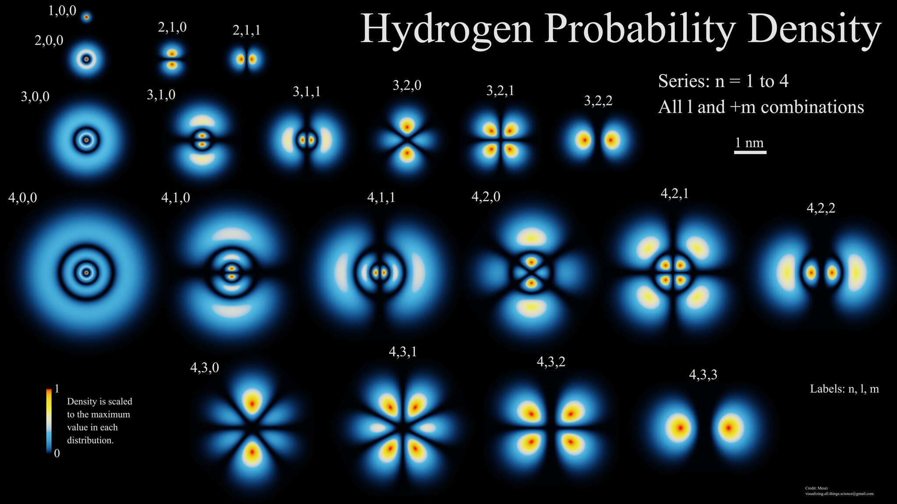
-
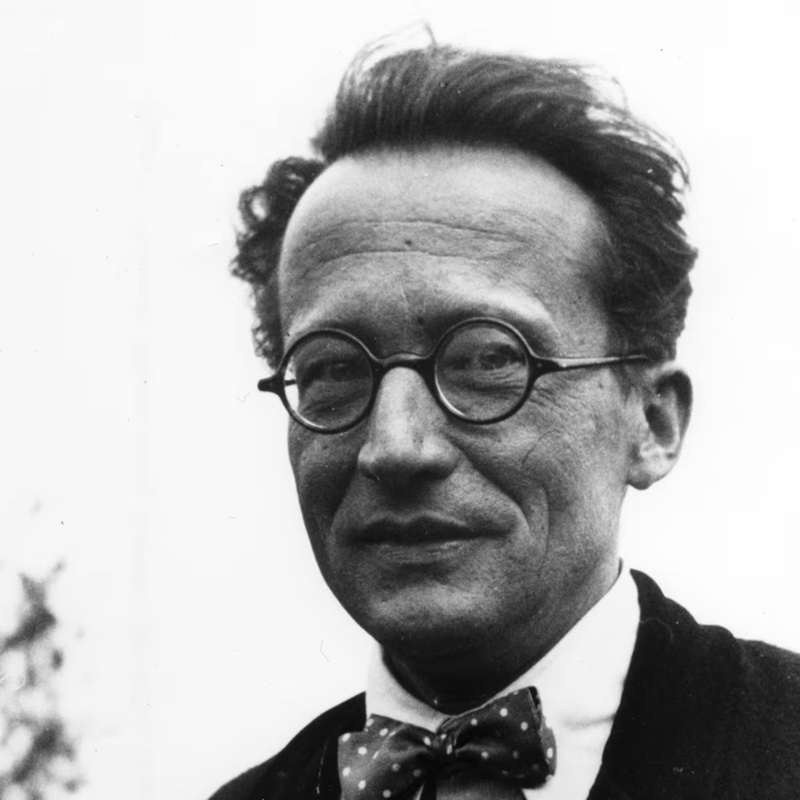
Erwin Schrödinger (1887–1961)
Την κυματική εξίσωση που διέπει τα ηλεκτρόνια βρήκε για πρώτη φορά ο Erwin Schrödinger το 1926. Οι λύσεις αυτής της εξίσωσεις στην περίπτωση του ηλεκτρονίου, που είναι περιορισμένο στο χώρο λόγω της έλξης του πυρήνα, είναι πράγματι συγκεκριμένα τρισδιάστατα σχήματα συντονισμού με κόμβους. Οι κόμβοι εδώ είναι δισδιάστατες επιφάνειες (επίπεδες, σφαιρικές ή κωνικές) που χωρίζουν τα σχήματα σε κομμάτια - ή όπως είθισται να ονομάζονται, σε λοβούς.
Αυτό σημαίνει ότι το άτομο δεν είναι ακριβώς όσο κενό το βρήκε ο Rutherford. Ο πυρήνας καταλαμβάνει πράγματι ελάχιστο μέρος της έκτασής του, αλλά ο γύρω χώρος είναι κατειλημμένος από ένα απλωμένο και συντονισμένο, κυματικό ηλεκτρόνιο.
Παρόλο που είναι απλωμένο, αν προσπαθήσουμε να μετρήσουμε στην πραγματικότητα που βρίσκεται το ηλεκτρόνιο πειραματικά, κάθε φορά θα παίρναμε μια διαφορετική αλλά συγκεκριμένη θέση ως απάντηση. Στο κυματικό μοντέλο του Schrödinger λοιπόν, τα κύματα αυτά μπορούν να συσχετιστούν με την πιθανότητας ανίχνευσης. Η πιθανότητα να βρούμε το ηλεκτρόνιο σε μια περιοχή είναι μεγαλύτερη όσο πυκνότερο είναι το σχήμα, και το νέφος που σχεδιάζουμε είναι ένας χάρτης αυτής της πυκνότητας. Δεν είναι μια καταγραφή της τροχιάς του ηλεκτρονίου αλλά οι περιοχές στις οποίες είναι πιο πιθανό να βρεθεί.
Διαδραστικό Εργαστήριο
Στο εργαστήριο που ακολουθεί θα δεις σε διαδραστική μορφή όλες αυτές τις στάσιμες κυματικές μορφές συντονισμού που μπορεί να πάρει ένα ηλεκτρόνιο γύρω από έναν πυρήνα. Ορισμένες καταστάσεις έχουν σφαιρική συμμετρία· άλλες εμφανίζουν λοβούς και κόμβους, περιοχές όπου η η λύση της κυματικής εξίσωσης μηδενίζεται.
Οι καταστάσεις περιγράφονται από 3 αριθμούς που για ιστορικούς λόγους ονομάζονται n, l και m, οι οποίοι χαρακτηρίζουν μονοσήμαντα την κατάσταση, συνδέοντάς τη με την ενέργεια και τη στροφορμή της. Δοκίμασε να αλλάξεις αυτούς τους αριθμούς για να εξερευνήσεις τα διαφορετικά σχήματα. Μόνο ορισμένοι συνδυασμοί αριθμών είναι επιτρεπτοί γι’ αυτό θα δεις ότι δεν μπορείς πάντα να τους αλλάξεις προς όποια κατεύθυνση θες.
Τι να παρατηρήσεις
- Στην μεταλλική πλάκα που είδαμε προηγουμένως, η άμμος συγκεντρώνεται κοντά στους κόμβους. Στο ατομικό νέφος, τι περιμένεις να συμβαίνει με την πυκνότητα κοντά σε έναν κόμβο;
- Πώς αλλάζει το μέγεθος, όσο αυξάνεις το n;
- Πώς αλλάζει ο αριθμός των λοβών και των κόμβων όσο αλλάζεις το n και το l?
Και για τα υπόλοιπα άτομα;
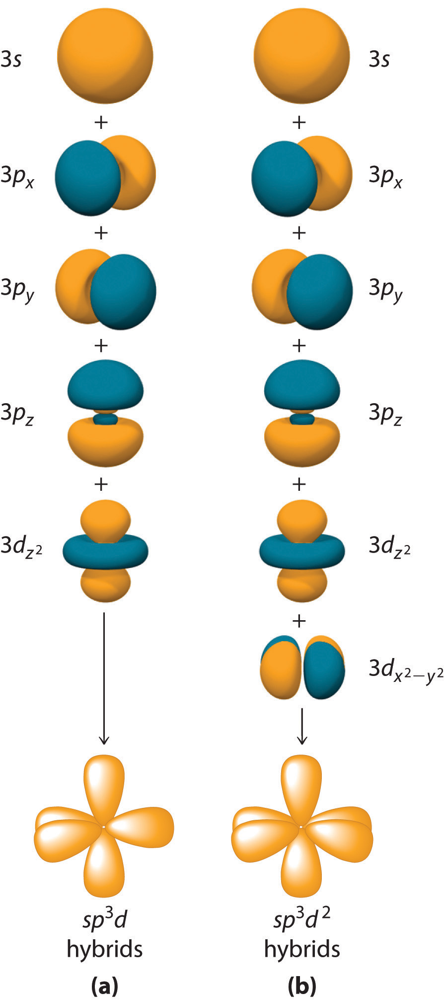
Όλες αυτές οι μορφές αποτελούν τη λύση της κυματικής εξίσωσης για έναν μόνο ηλεκτρόνιο και άρα αφορούν αποκλειστικά το άτομο του Υδρογόνου. Για περισσότερα από ένα ηλεκτρόνια, όπως στο παράδειγμα του Ηλίου, η λύση της εξίσωσης είναι αδύνατο να λυθεί ακριβώς επειδή περιλαμβάνει τις αλληλεπιδράσεις μεταξύ τους, και ακόμα πιο αδύνατο να ζωγραφιστεί επειδή έχει 6 διαστάσεις και όχι 3!
Συνήθως κάνουμε όμως την προσέγγιση ότι τα ηλεκτρόνια ενός ατόμου ξεκινάνε να γεμίζουν τις καταστάσεις του υδρογόνου από την χαμηλότερη προς την υψηλότερη οπότε μάλλον το σχήμα τους είναι ένας συνδυασμός των σχημάτων που μπορείς να δεις στο εργαστήριο το ένα πάνω στο άλλο. Αυτό ονομάζεται υβριδισμός.
Και κάτι τελευταίο: τι ακριβώς κυματίζει;
Kάθε κύμα όμως είναι η ταλάντωση ενός μέσου. Το κύμα της θάλασσας είναι η ταλάντωση του νερού και το ηχητικό κύμα των μορίων του αέρα. Αν αυτό που λέμε ηλεκτρόνιο είναι ένας στάσιμος κυματισμός που ερμηνεύται ως πυκνότητα πιθανότητας, ποιο είναι το μέσο που κυματίζει;
Εδώ οι γνώμες των φυσικών διχάστηκαν. Μερικοί πίστευαν ότι ο κυματισμός αυτός δεν υφίσταται στην πραγματικότητα παρά είναι μόνο μια μαθηματική οντότητα που μας επιτρέπει να κάνουμε υπολογισμούς και προβλέψεις σε πειράματα. Ενώ άλλοι, γύρισαν πίσω στην ιδέα ότι το ηλεκτρόνιο είναι ένα σωματίδιο με την κλασική έννοια που έχει συγκεκριμένη θέση και τροχιά και απλώς παρασύρεται από ένα πραγματικό κύμα όπως μια σημαδούρα στην επιφάνεια της θάλασσας.
Η σύγχρονη επιστήμη πάντως έχει δώσει τη δική της απάντηση. Θεωρεί πως το ηλεκτρόνιο είναι ένας κυματισμός σε μια οντότητα που ονομάζεται ηλεκτρονικό πεδίο. Ένα πεδίο είναι κάτι σαν μια διάχυτη αύρα η οποία διαποτίζει όλο τον χωροχρόνο και μπορεί να διεγερθεί, να ζαρώσει, να εμφανίσει εξογκώματα, ρυτίδες κτλ. Τα σωματίδια λοιπόν δεν είναι τίποτα άλλο παρά λόφοι και λακκούβες πάνω σε αυτά τα κοσμικά σεντόνια.